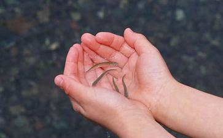

其实几年之前就已经开始接触到
之前的工作一直不顺，所以我每次遇到工作不顺的时候都要去算命，有的说好，有的说一般，也有算命的写符什么的，贴在家里的什么位置，说这一年会顺起来等等等等，有次我刚把苻贴上，过了没几天我就被委婉地辞退了，我打电话去质问那个算命的人，因为这一张符他收了我900元，现在想来这钱当时要是拿来
后来工作太不顺了，总是在一个公司要到了很高的价，而我的能力也确实值这个价，每次却都是因为和上司和同事搞不好关系而做不长，常常会看不起那些能力不如我却只知跟领导搞关系拍马的人，有次又跟领导发生矛盾，因为他一直压制我，不让我的能力得到施展，我写的东西他总是觉得不好，还处处找我的不是，我也跟他混不吝，当时郁闷到几乎想拿刀砍他(严重忏悔)，其实明明是自己的福报不够，总是遇到小人与违缘，该忏悔的是我自己，只是当时不清楚自己总是这么不顺的原因。
后来一直在网上看到学佛的人放生的人写的他们的通过学佛放生之后的改变，有得几乎是
其实几年之前我也曾经去放过生，数量很小，因为要做很远的车去放，而且那里的水质还不好，有一次带着几条泥鳅去放生，坐车去了很远的地方，到了才发现原本勉强还算不臭的水质，这次臭的难以接近，泥鳅在里面肯定活不了了，我又赶紧再次坐上车去寻找其他的放
后来有次我又去朝阳公园放生，那时的发心很不对，因为当时听别人说她放生之后很快就得到了钱财，虽然不多，但是很灵，我也想尝试，就又买了写泥鳅，也就几个，很不多，还曾经跟卖我泥鳅的老板说把死泥鳅拿出来，把泥鳅里混进去的小鱼拿出来，我只放活泥鳅，当时真是没有一点慈悲心，小鱼就不是命吗？(深深忏悔)，去朝阳公园放完那些泥鳅之后，泥鳅忽的就跑开了，也没见他们回来谢恩，之后我反而生出了埋怨心，埋怨放生不灵，埋怨我的境况没有得到改善，(罪孽深重啊)，分明是自己的业障深重，放生几条泥鳅就想得到改善吗？何况平时一句佛号也不念，除了放生的时候，拿着一片纸，念的那几声阿弥陀佛，那时的我简直罪孽深重！
后来也就是最近半个月的时间吧，我在网上结识了一个精进放生念佛的善知识，真真感谢佛
之后很快，老公便接到了一个兼职的活，这个活几乎可以说是菩萨送给他的，因为一点都不累，而这个活的钱是当初老公发心放生款的很多倍，我不禁要感叹放生的神奇。其实老公什么
在此期间我老公又谈了个别的私活，过程不太顺，反反复复，有次早晨他叹气地说，为什么最近谈的都没有结果呢？我一听心里就有数了，这是福报不够的表现啊，即便是有机会也要有足够的福报才能担得起，所以我还得继续放生。正好第二天是老公的生日，我们决定一起去朝阳公园放生。当时老公说他随喜10块钱的，我们来到卖水产的地方，问了前几家都没有泥鳅(因为怕其他的鱼活不了，而泥鳅的生存能力很强，所以还是决定放泥鳅)，说是太贵了上了怕卖不出去，问到第三家终于有泥鳅，一问35块钱一斤，我买了45块钱的，当时有两个泥鳅从网子里跑出去了，老板当时着急称，就没要他俩，我坚持把他俩放上一起称，不能让他们被杀，(很惭愧的是，老公对我的行为不理解，他觉得太贵了，他觉得买便宜的小泥鳅可以买更多，我跟他说，这些已经在网子里了，捞起来就没有再放回去的道理)，他去了另一摊买他说的便宜的小泥鳅去了因为他觉得可以买更多条泥鳅，买了13块钱的。我们俩的加起来一共是58元的泥鳅，算上我前一天通过支付宝随喜在南方城市的另一个共修放生的10块钱一共是68元，而这正是那天我师兄说请我吃饭的钱，当时我不愿意她请我，她说你就把钱放生吧，正好也是68元，神奇啊。
之后我们来到了朝阳公园，那天阳光明媚，我在门口差点跟卖票的吵架(忏悔)，我问人家放生的是不是不用买门票钱，她说就从来没有这事，还说现在很多地方都不允许放生了，我问这里不允许吗，里面另一个女人很大声的说，不知道，去里面看是否有人阻止，我有点
我们进到朝阳公园后，走到人际稀少的湖边，我钻进铁栏杆里，迅速念了阿弥陀佛与三皈依，迅速把泥鳅放了，因为我买的泥鳅大，虽然充了氧，也有水，但是怕时间长了它们撑不住，所以赶紧放掉了，它们瞬间跑得干净净，也没回游看我一眼。总算完成我的任务，但我老公不想在我方泥鳅的地方放掉他买的小泥鳅，他想找个岸边，亲手放，感受泥鳅入水得生的欢乐，我们沿着湖边又往里面走去，终于走到了尽头，好在那边的栏杆确实是矮，不用钻到栏杆里面去放，老公欢快得放了小泥鳅，他们也很快不见了，我嘴里不住地念着阿弥陀佛为整个朝阳公园的物命做三皈依，心里还是有些遗憾，小泥鳅们都走了，没有一个回游的，正想着，忽然看见一队长约三米，宽约一尺的银白色的小鱼组成的队伍浩浩荡荡的在我们放泥鳅的地方游了过去，好似龙宫的仪仗队，我对着他们不住地念阿弥陀佛。我大声叫老公过来看，希望他也感受这神奇的一幕，他看了之后，小鱼很快游走了，我把脚伸在栏杆下面别着，身子往前探头看水里，忽然看到那些我们放生的小泥鳅都没走，他们摇头摆尾的在往岸边的石头缝里钻，好
当天回到家之后，还没进家门，就接到了电话，说是那事成了。阿弥陀佛，我佛慈悲。我们为宣扬佛法，其实也没做什么事，尤其是我业障深重，此生幸得闻佛法啊，我决定这一辈子都要好好念佛，不断地发现自己的不足，错误，慢慢修正，不断向佛法宣扬的人生迈进。
这篇文章写出来，丝毫不是为了炫耀，也没什么好炫耀的，我不管是放生还是念佛都不够精进，跟很多同修都是没法比的，但我还是要写出来，让更多的人对佛法对放生有